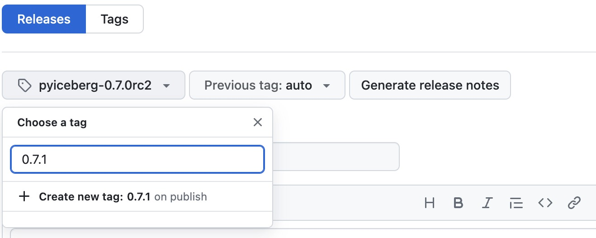

How to Release¶
This guide outlines the process for releasing PyIceberg in accordance with the Apache Release Process. The steps include:
- Preparing for a release
- Publishing a Release Candidate (RC)
- Community Voting and Validation
- Publishing the Final Release (if the vote passes)
- Post-Release Step
Requirements¶
- A GPG key must be registered and published in the Apache Iceberg KEYS file. Follow the instructions for setting up a GPG key and uploading it to the KEYS file.
- Permission to update the
KEYSartifact in the Apache release distribution (requires Iceberg PMC privileges).
- Permission to update the
- SVN Access
- Permission to upload artifacts to the Apache development distribution (requires Apache Committer access).
- Permission to upload artifacts to the Apache release distribution (requires Apache PMC access).
- PyPI Access
- The
twinepackage must be installed for uploading releases to PyPi. - A PyPI account with publishing permissions for the pyiceberg project.
- The
Preparing for a Release¶
Remove Deprecated APIs¶
Before running the release candidate, we want to remove any APIs that were marked for removal under the @deprecated tag for this release. See #1269.
For example, the API with the following deprecation tag should be removed when preparing for the 0.2.0 release.
@deprecated(
deprecated_in="0.1.0",
removed_in="0.2.0",
help_message="Please use load_something_else() instead",
)
We also have the deprecation_message function. We need to change the behavior according to what is noted in the message of that deprecation.
deprecation_message(
deprecated_in="0.1.0",
removed_in="0.2.0",
help_message="The old_property is deprecated. Please use the something_else property instead.",
)
Update Library Version¶
Update the version in pyproject.toml and pyiceberg/__init__.py to match the release version. See #1276.
Publishing a Release Candidate (RC)¶
Release Types¶
Major/Minor Release¶
- Use the
mainbranch for the release. - Includes new features, enhancements, and any necessary backward-compatible changes.
- Examples:
0.8.0,0.9.0,1.0.0.
Patch Release¶
- Use the branch corresponding to the patch version, such as
pyiceberg-0.8.x. - Focuses on critical bug fixes or security patches that maintain backward compatibility.
- Examples:
0.8.1,0.8.2.
To create a patch branch from the latest release tag:
# Fetch all tags
git fetch --tags
# Assuming 0.8.0 is the latest release tag
git checkout -b pyiceberg-0.8.x pyiceberg-0.8.0
# Cherry-pick commits for the upcoming patch release
git cherry-pick <commit>
Create Tag¶
Ensure you are on the correct branch:
- For a major/minor release, use the
mainbranch - For a patch release, use the branch corresponding to the patch version, i.e.
pyiceberg-0.6.x.
Create a signed tag:
Replace VERSION and RC with the appropriate values for the release.
export VERSION=0.7.0
export RC=1
export VERSION_WITH_RC=${VERSION}rc${RC}
export GIT_TAG=pyiceberg-${VERSION_WITH_RC}
git tag -s ${GIT_TAG} -m "PyIceberg ${VERSION_WITH_RC}"
git push git@github.com:apache/iceberg-python.git ${GIT_TAG}
Create Artifacts¶
The Python Build Release Candidate Github Action will run automatically upon tag push.
This action will generate artifacts that will include both source distribution (sdist) and binary distributions (wheels using cibuildwheel) for each architectures.
This action will generate two final artifacts:
svn-release-candidate-${VERSION}rc${RC}for SVNpypi-release-candidate-${VERSION}rc${RC}for PyPi
If gh is available, watch the GitHub Action progress using:
RUN_ID=$(gh run list --repo apache/iceberg-python --workflow "Python Build Release Candidate" --branch "${GIT_TAG}" --event push --json databaseId -q '.[0].databaseId')
echo "Waiting for workflow to complete, this will take several minutes..."
gh run watch $RUN_ID --repo apache/iceberg-python
and download the artifacts using:
Publish Release Candidate (RC)¶
Upload to Apache Dev SVN¶
Download Artifacts, Sign, and Generate Checksums¶
Download the SVN artifact from the GitHub Action and unzip it.
Navigate to the artifact directory. Generate signature and checksum files:
.ascfiles: GPG-signed versions of each artifact to ensure authenticity..sha512files: SHA-512 checksums for verifying file integrity.
(
cd svn-release-candidate-${VERSION}rc${RC}
for name in $(ls pyiceberg-*.whl pyiceberg-*.tar.gz)
do
gpg --yes --armor --output "${name}.asc" --detach-sig "${name}"
shasum -a 512 "${name}" > "${name}.sha512"
done
)
The parentheses () create a subshell. Any changes to the directory (cd) are limited to this subshell, so the current directory in the parent shell remains unchanged.
Upload Artifacts to Apache Dev SVN¶
Now, upload the files from the same directory:
export SVN_TMP_DIR=/tmp/iceberg-${VERSION}/
svn checkout https://dist.apache.org/repos/dist/dev/iceberg $SVN_TMP_DIR
export SVN_TMP_DIR_VERSIONED=${SVN_TMP_DIR}pyiceberg-$VERSION_WITH_RC/
mkdir -p $SVN_TMP_DIR_VERSIONED
cp svn-release-candidate-${VERSION}rc${RC}/* $SVN_TMP_DIR_VERSIONED
svn add $SVN_TMP_DIR_VERSIONED
svn ci -m "PyIceberg ${VERSION_WITH_RC}" ${SVN_TMP_DIR_VERSIONED}
Verify the artifact is uploaded to https://dist.apache.org/repos/dist/dev/iceberg.
Remove Old Artifacts From Apache Dev SVN¶
Clean up old RC artifacts:
svn delete https://dist.apache.org/repos/dist/dev/iceberg/pyiceberg-<OLD_RC_VERSION> -m "Remove old RC artifacts"
Upload to PyPi¶
Download Artifacts¶
Download the PyPi artifact from the GitHub Action and unzip it.
Upload Artifacts to PyPi¶
Update the artifact directory to PyPi using twine. This won't bump the version for everyone that hasn't pinned their version, since it is set to an RC pre-release and those are ignored.
Note
twine might require an PyPi API token.
Verify the artifact is uploaded to PyPi.
Vote¶
Generate Vote Email¶
Final step is to generate the email to the dev mail list:
export GIT_TAG_REF=$(git show-ref ${GIT_TAG})
export GIT_TAG_HASH=${GIT_TAG_REF:0:40}
export LAST_COMMIT_ID=$(git rev-list ${GIT_TAG} 2> /dev/null | head -n 1)
cat << EOF > release-announcement-email.txt
To: dev@iceberg.apache.org
Subject: [VOTE] PyIceberg $VERSION_WITH_RC
Hi Everyone,
I propose that we release the following RC as the official PyIceberg $VERSION release.
A summary of the high level features:
* <Add summary by hand>
The commit ID is $LAST_COMMIT_ID
* This corresponds to the tag: $GIT_TAG ($GIT_TAG_HASH)
* https://github.com/apache/iceberg-python/releases/tag/$GIT_TAG
* https://github.com/apache/iceberg-python/tree/$LAST_COMMIT_ID
The release tarball, signature, and checksums are here:
* https://dist.apache.org/repos/dist/dev/iceberg/pyiceberg-$VERSION_WITH_RC/
You can find the KEYS file here:
* https://downloads.apache.org/iceberg/KEYS
Convenience binary artifacts are staged on pypi:
https://pypi.org/project/pyiceberg/$VERSION_WITH_RC/
And can be installed using: pip3 install pyiceberg==$VERSION_WITH_RC
Instructions for verifying a release can be found here:
* https://py.iceberg.apache.org/verify-release/
Please download, verify, and test.
Please vote in the next 72 hours.
[ ] +1 Release this as PyIceberg $VERSION
[ ] +0
[ ] -1 Do not release this because...
EOF
Send Vote Email¶
Verify the content of release-announcement-email.txt and send it to dev@iceberg.apache.org with the corresponding subject line.
Vote has failed¶
If there are concerns with the RC, address the issues and generate another RC.
Publish the Final Release (Vote has passed)¶
A minimum of 3 binding +1 votes is required to pass an RC. Once the vote has been passed, you can close the vote thread by concluding it:
Thanks everyone for voting! The 72 hours have passed, and a minimum of 3 binding votes have been cast:
+1 Foo Bar (non-binding)
...
+1 Fokko Driesprong (binding)
The release candidate has been accepted as PyIceberg <VERSION>. Thanks everyone, when all artifacts are published the announcement will be sent out.
Kind regards,
Upload the accepted RC to Apache Release SVN¶
Note
Only a PMC member has the permission to upload an artifact to the SVN release dist.
export SVN_DEV_DIR_VERSIONED="https://dist.apache.org/repos/dist/dev/iceberg/pyiceberg-${VERSION_WITH_RC}"
export SVN_RELEASE_DIR_VERSIONED="https://dist.apache.org/repos/dist/release/iceberg/pyiceberg-${VERSION}"
svn mv ${SVN_DEV_DIR_VERSIONED} ${SVN_RELEASE_DIR_VERSIONED} -m "PyIceberg: Add release ${VERSION}"
Verify the artifact is uploaded to https://dist.apache.org/repos/dist/release/iceberg.
Remove Old Artifacts From Apache Release SVN¶
We only want to host the latest release. Clean up old release artifacts:
svn delete https://dist.apache.org/repos/dist/release/iceberg/pyiceberg-<OLD_RELEASE_VERSION> -m "Remove old release artifacts"
Upload the accepted release to PyPi¶
The latest version can be pushed to PyPi. Check out the Apache SVN and make sure to publish the right version with twine:
Note
twine might require an PyPi API token.
svn checkout https://dist.apache.org/repos/dist/release/iceberg /tmp/iceberg-dist-release/
cd /tmp/iceberg-dist-release/pyiceberg-${VERSION}
twine upload pyiceberg-*.whl pyiceberg-*.tar.gz
Verify the artifact is uploaded to PyPi.
Post Release¶
Send out Release Announcement Email¶
Send out an announcement on the dev mail list:
To: dev@iceberg.apache.org
Subject: [ANNOUNCE] PyIceberg <VERSION>
I'm pleased to announce the release of PyIceberg <VERSION>!
Apache Iceberg is an open table format for huge analytic datasets. Iceberg
delivers high query performance for tables with tens of petabytes of data,
along with atomic commits, concurrent writes, and SQL-compatible table
evolution.
This Python release can be downloaded from: https://pypi.org/project/pyiceberg/<VERSION>/
Thanks to everyone for contributing!
Create a Github Release Note¶
Create a new Release Note on the iceberg-python Github repository.
Input the tag in Choose a tag with the newly approved released version (e.g. 0.7.0) and set it to Create new tag on publish. Pick the target commit version as the commit ID the release was approved on.
For example:

Then, select the previous release version as the Previous tag to use the diff between the two versions in generating the release notes.
Generate release notes.
Set as the latest release and Publish.
Make sure to check the changelog label on GitHub to see if anything needs to be highlighted.
Release the docs¶
Run the Release Docs Github Action.
Update the Github template¶
Make sure to create a PR to update the GitHub issues template with the latest version.
Misc¶
Set up GPG key and Upload to Apache Iceberg KEYS file¶
To set up GPG key locally, see the instructions.
To install gpg on a M1 based Mac, a couple of additional steps are required: https://gist.github.com/phortuin/cf24b1cca3258720c71ad42977e1ba57.
Then, published GPG key to the Apache Iceberg KEYS file:
svn co https://dist.apache.org/repos/dist/release/iceberg icebergsvn
cd icebergsvn
echo "" >> KEYS # append a newline
gpg --list-sigs <YOUR KEY ID HERE> >> KEYS # append signatures
gpg --armor --export <YOUR KEY ID HERE> >> KEYS # append public key block
svn commit -m "add key for <YOUR NAME HERE>" # this requires Iceberg PMC privileges
Note
Updating the KEYS artifact in the release/ distribution requires Iceberg PMC privileges. Please work with a PMC member to update the file.